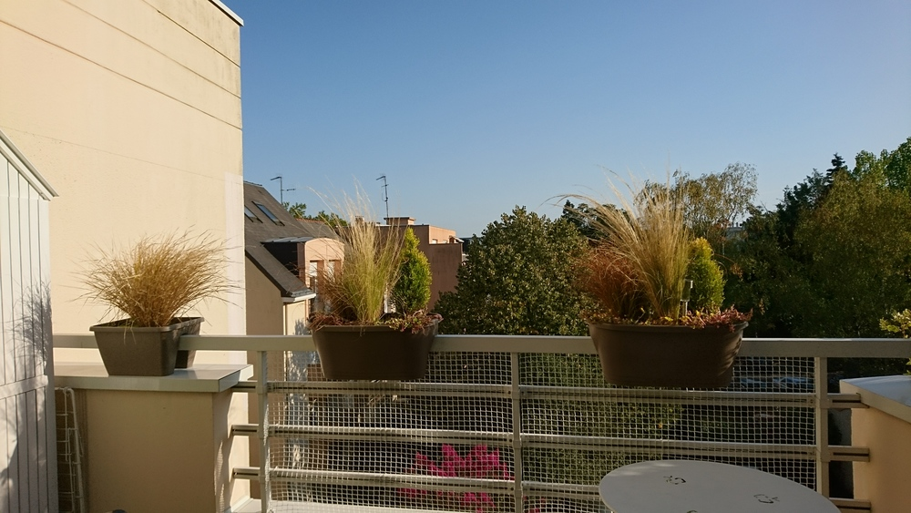
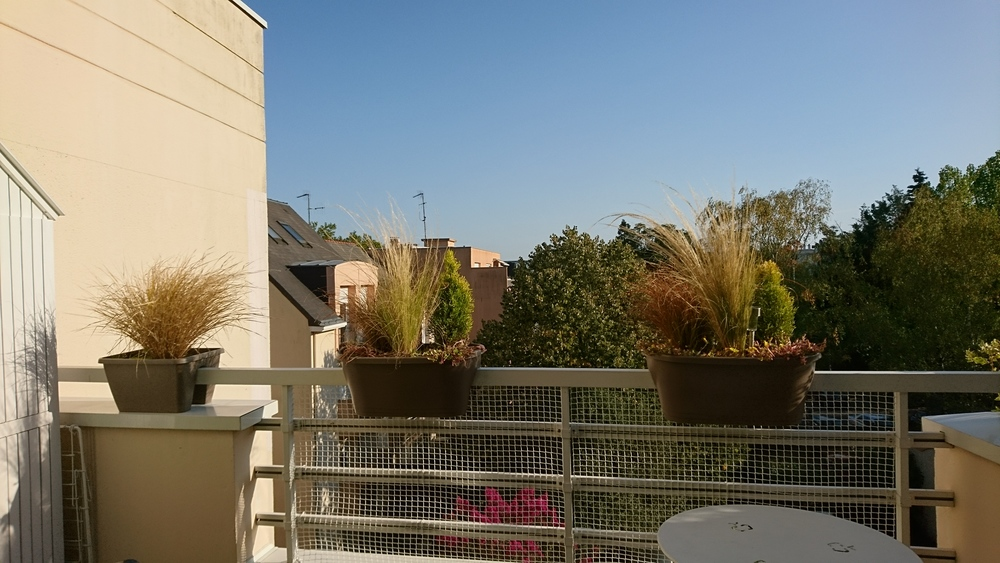
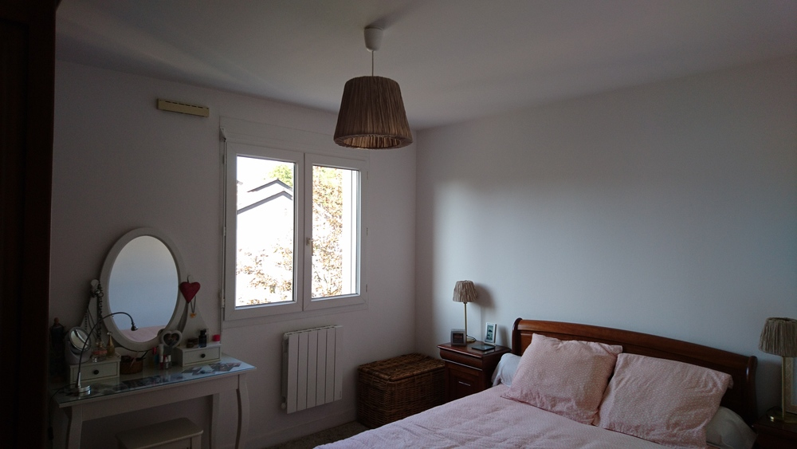
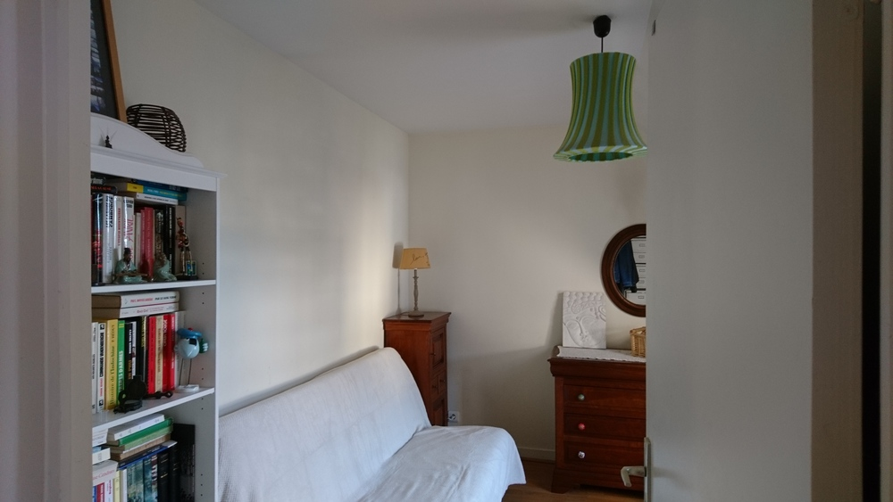
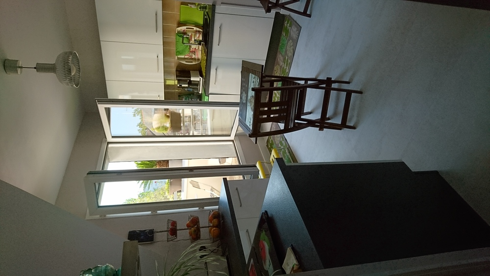

47 boulevard des tribunes c’est l’appartement avec un toit plat, qui semble être coincé au troisième étage entre les deux immeubles.
Immeuble des années 90, les proprios semblent soigneux. linoléum imitation parquet (assez bluffant) dans le couloir, lino dans la cuisine également et les chambres (au moins la principale), stratifié dans le séjour. Murs assez propres, pas de coups, un peu de rafraîchissement peut-être, mais très largement habitable en l’état.
Je ne connais pas le quartier. L’hippodrome est juste de l’autre côté de la rue, le boulevard n’est pas très passant. L’appartement ne donne pas du tout sur la rue. Un collègue habite à 200m, je le verrai vendredi pour discuter de l’ambiance générale (il s’y plaît beaucoup apparemment, et sa soeur a habité dans cet immeuble). 3eme étage sur 3, deux appartements par étage, donc tranquille.
Pas de vis à vis sur aucune des fenêtres, ça a l’air très calme et silencieux.
Le toit est en ardoise, je me demande si c’est une bonne chose ou pas.
Charges de 110 euros/mois. taxe foncière: 1060. Facture EDF de 90 euros/mois, selon les proprios. Fibre.
Google maps me dit grosso modo 20 min des cours de danse, du boulot en vélo. Station de bus qui mène au centre au pied de l’immeuble. un peu loin du tram peut-être.
peu de commerce de proximité…

Le couloir est assez large et dessert toutes les pièces. L’entrée est assez lumineuse puisque la lumière vient de la cuisine en face, et du séjour tout de suite sur la gauche.
Dans sa configuration actuelle, je le trouve très accueillant. D’autant plus qu’il recevait la lumière du soir par la porte fenêtre qui mène au balcon. Il est assez lumineux également car une large fenêtre est située au sud. Le parquet stratifié est propre.


Pas énorme, mais je m’y suis bien senti. Il est complètement protégé: à gauche le mur du séjour, derrière c’est la cuisine et à droite un “mur végétal” (cf photos) et pas de vis à vis devant, juste un grand espace délimité par d’autres immeubles. Silence et calme, on s’y sent chez soi, tranquille.
 

Pas grand chose à dire. Pas de fenêtre qui permet d’évacuer facilement l’humidité.
1 fenêtre, bon état, pas grand chose à dire.

Plus petite, de l’ordre de 9/10m2. une fenêtre et un velux.

Une vraie cuisine avec de la place, un plan de travail et qui donne sur le balcon. La porte fenêtre est orientée vers le sud.
